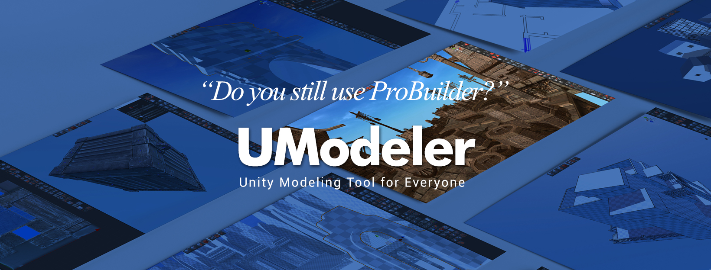

UModeler 2019¶

Version 2.6.27 - Dec.31.2019¶
Fix : Removed all warnings related to deprecated Unity APIs
Fix : Fixed the system toolbar not displaying on the scene view in Unity 2019.x due to the changes of 2.6.26
Fix : Fixed mouse events not working on the scene view in Unity 2019.x due to the changes of 2.6.26
Version 2.6.26 - Dec.27.2019¶
Fix : Jump of the selected UModeler object with Grid snap on just after loading a scene.
Fix : UModeler not working when Gizmos is off on unity 2019.3.x Version 2.6.25
Version 2.6.25f2 - Dec.17.2019¶
Fix : Now Gizmo position depends on Pivot Mode which has
CenterandPivot.
Version 2.6.24 - Dec.16.2019¶
Fix : Wrong pivot position after applying pivot tool to the rotated or scaled UModeler object.
Enhancement : Allowed 3D Cursor to be snapped a nearby vertex only if holding CTRL.
Version 2.6.23 - Dec.11.2019¶
Fix : Fixed not disabling grid snapping in Object Mode.
Fix : Fixed object world position jumping when using pivot tools.
Enhancement : Enabled a material to be assigned to a whole UModeler object in Object mode using a hotkey.
Version 2.6.22f4 - Dec.9.2019¶
Enhancement : Improved a way of assigning Materials with
Alt+0+Alt+9.Enhancement : Improved Grid snapping so that it works based on world space.
Enhancement : Now UModeler object moves by a grid size when Grid snapping is enabled.
Enhancement :
ExportToolAddedCreate Folder,Export Material,Export Vertex ColorandOptimize UVtoggles for .obj export to allow a folder not to be created.Enhancement :
ExportToolAddedReset .Obj Propertiesbutton.Enhancement :
ExportToolAllowed a mesh to be exported as .obj under any other folders.Enhancement : Changed the Move/Rotate/Scale handlers’ position to the center of the last element. It used to be the center of all the selected elements.
Enhancement : Increased the selection vertex marker size. Now markers are more noticdeable and easiser to be selected.
Enhancement : Made CMD available instead of CTRL on MacOSX
Fix : Fixed Null Reference Exception in UVEditorWindow.EditorMsgCallback
Fix : The search text edit box is emptied in the inspector when a tool is selected.
Fix : Fixed UV2 generation issue in Refresh All.
Fix : Fixed some exception errors of Refresh All.
Fix : Fixed entangled vertices bug happening when moving a vertex with
Invert Vertexon.Fix : Fixed a bug where the cursor isn’t displayed rightly when the camera is under the world floor.
Fix : Fixed Null Reference Exception and Null Argument Exception thrown when entering Play Mode.
Fix : Fixed UV distortion of Autolayout.
See also
Version 2.6.21 - Nov.29.2019¶
Enhancement : Added Unwrap parameters for Lightmap to Preference
Fix : Broken lightmap when [Don’t Save on Build] is on in local Settings
Version 2.6.20 - Nov.7.2019¶
Fix : Fixed UModeler object disappearing when it is selected on play mode.
Version 2.6.19 - Nov.6.2019¶
Fix : Fixed bug where collider doesn’t work on play mode.
Fix : Fixed bug where UModeler mesh disappearing when clicking on a umodeler object after exiting play mode.
Fix : Fixed polygons disappearing while using PushPull tool.
Version 2.6.18 - Oct.23.2019¶
Fix : [Cut Tool] Fixed incorrect cutting in orthogonal view.
Fix : [Cut Tool] Fixed not selecting the above polygons after cutting when Select Above is on.
Enhancement : [Cut Tool] Cutting line has been changed for only an edge between starting pos and ending pos to be rendered.
Enhancement : Added a shortcut for refresh All(Ctrl+Shift+E by default)
Fix : Fixed failing to find ExportToPNG method when exporting UV outline in Export Tool in UV Editor.
Fix : Fixed displaying warning messages about using prefab obsolete APIs.
Fix : Fixed warning message about obsolete PreferenceIItem and Removed UModeler item in Unity Preference.
Fix : Fixed setting the parent of a transform which resides in a Prefab Asset.
Fix : Fixed the different MeshRenderer inspector UI layout when UModeler is installed.
Fix : Fixed parsing errors of grid snap size and rotation snap size in UV Editor settings.
Fix : Default prefab and obj file names in export won’t have spaces anymore.
Fix : Fixed a long lag issue when saving a level.
Fix : Fixed not displaying icon menus in the inspector after loading a scene.
Version 2.6.17 - Oct.11.2019¶
Fix : Fixed smoothing group polygons going away after undoing.
Fix : Fixed wrong material assignment and losing mouse focus while transforming elements using a gizmo.
Fix : Fixed stopping creating the first box by dragging. This also caused losing the mouse focus.
Fix : Fixed some polygons missing after entering the game mode.
Version 2.6.16 - Sep.11.2019¶
Hotfix : Broken lightmap issues when opening a scene or entering play mode
Hotfix : Fix bug where multiple UModeler objects aren’t combined using Combine tool as expected.
Hotfix : Fix bug where UModelerlizie doesn’t work just after UModeler package is loaded.
Hotfix : Removed “Builds a mesh in Start()” from Local Settings and got rid of calling Build() method in Start() method.
Enhancement : Keeps the system menu(New UModeler, Settings and 3D cursor icons) visible on the scene view even when no UModeler objects aren’t selected.
Version 2.6.15 - Aug.27.2019¶
Hotfix : Fixed broken lightmap happening when selecting umodeler object or loading a scene etc.
Hotfix : Added “Builds a mesh in Start()” to Local settings to solve lags when there are lots of umodeler object in a scene.
Version 2.6.14 - Aug.7.2019¶
Hotfix : Fixed a bug where some error messages are thrown when an empty UModeler object exists in a level. The error message says about UV generation.
Hotfix : Fixed a bug where each polygons has its own UV rotation/scale pivot point. Now the UV center of the selected polygons is a pivot location.
Refactoring : UModeler.active is replaced with UMContext.activeModeler
Version 2.6.13 - Aug.2.2019¶
Hotfix : BoxTool - Fixed one click build bug where unnecessary polygons were created.
Hotfix : Fixed bug where Global/Local Overlay size and location are wrong when a mesh is translated/roatated/scaled.
Hotfix : Fixed missing UVs after UModelerization.
Hotfix : Fixed wrong outline of a scaled mesh.
Hotfix : Fixed black polygons appearance after UModelerization due to the wrong calculation of the plane normal.
Version 2.6.12 - July.23.2019¶
Hotfix : Select All Tool - Fix bug where vertex overlays aren’t updated when selecting all vertices using Select All Tool.
Hotfix : Line Tool - Fix bug where a line couldn’t cut a polygon when the umodeler object is too large.
Version 2.6.11 - July.16.2019¶
Hotfix : Fix bug where Settings are not preserved.
Hotfix : Fix bug where Scaling using the scale gizmo isn’t correct.
Hotfix : Fix bug where mouse events aren’t captured off the scene view.
Version 2.6.10 - July.02.2019¶
Hotfix : Fix bug where lightmaps are broken in play mode.
Hotfix : Fix bug where the gizmo disappear when getting back to edit mode from play mode.
Enhancement : Enhanced
Tools > UModeler > Refresh Allto fix invisible mesh and generate secondary uvs etc.Change : Changed
Generate Lightmap UVstoLightmap Staticand addedGenerate UV2 channel for Lightmapbutton toLocal Settingstool
Version 2.6.9 - June.28.2019¶
Hotfix : Fixed bug of primitive shape group tools and pushpull tool where pushing or pulling a face sometimes causes unexpected sudden move when the mouse cursor points at somewhere in the background.
Hotfix : Enables 3D cursor to be displayed in object mode.
Hotfix : Fix bug where UModeler meshes with smoothing groups disappears in play mode
Enhancement : Added
Top Center,CenterandBottom Centerbuttons toPivot To Centertool.
Version 2.6.8 - June.7.2019¶
Hotfix : Fix bug where .asset file wasn’t created when exporting to .prefab using Export Tool in UModeler.
Version 2.6.7 - June.5.2019¶
Hotfix : Improved compatibility with ProBuilder 4.x for displaying icons without overlapping and UModelerizing ProBuilder Object with deleting ProBuidlerMesh component.
Hotfix : Fixed bug where UModeler mesh is missing after instantiating UModeler object at runtime. Added UModeler.Builder() in UModeler.Start() message to have the mesh updated when UModeler component starts.
Version 2.6.6 - May.31.2019¶
Hotfix : Fixed bug where triangle count is not correct
Hotfix : Fixed bug where the detached uv islands or polygons don’t move separately without holding CTRL+SHIFT.
Hotfix : Fixed bug where blue cubes representing vertex positions and polygon center positions aren’t vanished when UModeler object is deleted.
Version 2.6.5 - May.13.2019¶
Hotfix : Fixed bug where moving a vertex or an edge sharing two polygons that have different materials doesn’t work.
Version 2.6.4 - May.10.2019¶
Hotfix : Fixed errors while UModelerizing.
Hotfix : Fixed bug where the selected UModeler object disappearing when entering the game mode.
Hotfix : Fixed bug where icons look a little bit whitish.
Version 2.6.3 - May.7.2019¶
Hotfix : Fixed bug where Export Tool in UV Editor doesn’t work in the latest Unity.
Version 2.6.2 - May.3.2019¶
Hotfix : Fixed bug where combine objects and boolean operation don’t work.
Version 2.6.1 - May.2.2019¶
Hotfix : Missing sciprt in the existing UModeler component.
Hotfix : Not displaying the cursor and overlays in Unity 2019.1.0f2
Version 2.6 - Apr.29.2019.4¶
Enhancement : Added two buttons to MeshFilter component inspector to have the mesh saved as .asset file.
Enhancement : Added
Don't save in buildtoLocal Settingstool to make you decide if UModeler component is included or not in build.Enhancement : Enabled to build UModeler mesh at runtime
Enhancement : Renewed the Preference window.
BugFix : Fixed broken icons caused as UModeler root folder is moved.
Change : Added preselection color setting to
Color settingsinPreference
Version 2.5 - Feb.26.2019¶
New Feature : Add UV Auto Layout function to the polygon tool.
New Feature : Add Color palettes to Vertex/Polygon color tools
New Feature : Introduce the Slot concept in Smoothing Group Tool
New Feature : Introduce the Slot concept in Material Tool
New Feature : Add Direct UV transform using Move/Rotate/Scale tools in the Scene view.
New Feature : Pre-selection Vertex/Edge/Polygon highlight
New Feature : Enable shortcuts in UV Editor
Enhancement : Improve Shortcut Setting UI in Preference to display only names of tools belonging to the selected group.
Enhancement : Add a button to assign a material to the whole object at once to the Material tool.
Enhancement : Allow camera panning in UV Editor by LMB dragging with ALT holding.
Enhancement : Allow the shorcut of New UModeler Tool all the time even when no umodeler object is selected.
Enhancement : Make the cone slicing possible using Loop Slice tool.
Change : Assgin New UModeler tool’s default shortcut as
CTRL + SHIFT + MChange : Change the default shortcuts for vertex/edge/polygons tools to Shift + 1/2/3
Change : Deprecate Edge Extrusion tool
Change : Update the help doc links
Change : Display the tool bar icons in the text based menu on UV editor.
Change : Add Confirm/Cancel buttons to the Property window of Clone Tool
BugFix : Fix stack overflow errer of Loop Slice Tool.
BugFix : Fix a bug not updating collider immediately.
BugFix : Fix a bug drawing a unexpected selection quad just when UV Editor is opened.
Version 2.4 - Jan.4.2019¶
Enhancement : Kept Toolbar visible while the text menu is enabled.
Enhancement : Stored the manu type in the registry whenever the menu is changed between text based and icon based
BugFix : Fixed not bringing the Meshfilter mesh when UModeler component is added to a game object with MeshFilter component.
BugFix : Gizmo scaling issue occuring when a couple of scene views are opened.
BugFix : Discarded .asset export in Export tool. It can be replaced with .prefab export.
BugFix : Invisible UModeler object with a parent prefab after its parent prefab is placed on the scene.